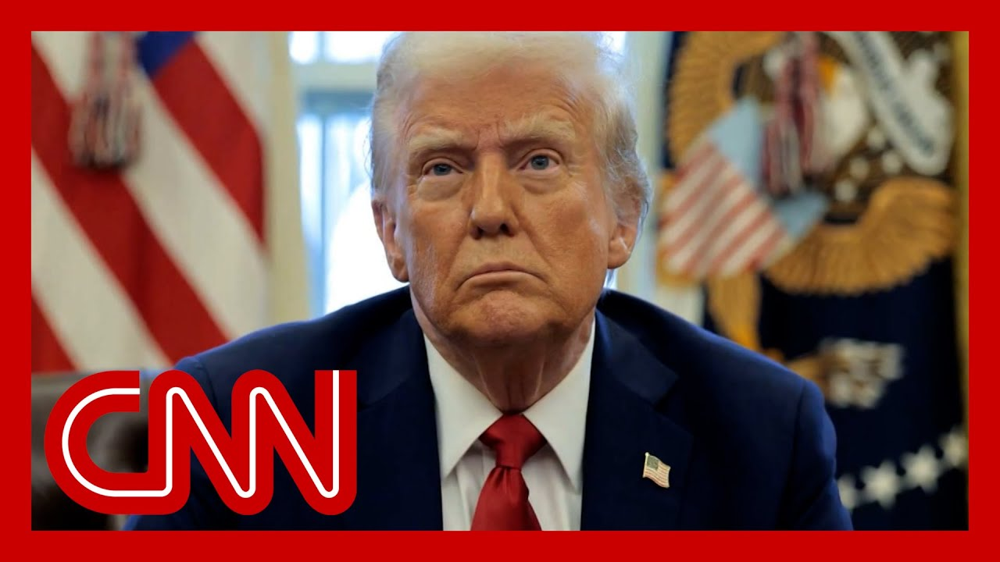

【特朗普考虑美国对伊朗核设施发动空袭】
Summary: The world awaits the American president's decision as tensions escalate between Israel and Iran, with missile attacks and explosions reported in both countries, while Trump weighs U.S. strikes on Iran's nuclear facilities amid divided opinions in Washington.
摘要： 全球正等待美国总统的决定，以色列和伊朗之间的紧张局势升级，两国均报告导弹袭击和爆炸事件，与此同时特朗普考虑对伊朗核设施发动美国空袭，华盛顿内部意见分歧。

⏱️ Estimated Reading Time: 20 min
📚 六级生词 📚 雅思生词 📚 托福生词 📚 专八生词 📚 SAT生词 📚 考研生词 📚 GRE生词 📚 高考生词
The world is really waiting for.
全世界都在等待。
Word from the American president.
来自美国总统的消息。
While the skies over both cities look and sound like Warning signs in Israel for waves of incoming missiles from Iran.
两座城市上空看起来和听起来都像是以色列对伊朗导弹袭击的警告信号。
Most intercepted by the Iron Dome some, as we've seen, play out in days, are getting through.
大部分被“铁穹”拦截，但正如我们所看到的，一些导弹在几天内突破防御。
There are also new explosions in Tehran, as Israel is warning an entire district of that city to evacuate tonight.
德黑兰也发生新的爆炸，以色列警告该市整个地区今晚撤离。
Our sources are telling us.
我们的消息来源告诉我们。
And the White House, President Trump is weighing using U.S. aircraft and bombs to strike Iran's nuclear facilities.
白宫方面，特朗普总统正考虑使用美国飞机和炸弹打击伊朗核设施。
A senior Israeli official says they're also waiting to learn whether or the president is going to help achieve their goal of destroying Iran's nuclear program.
一位以色列高级官员表示，他们也在等待总统是否会帮助实现摧毁伊朗核计划的目标。
The president huddled with his national security team in the Situation Room for over an hour today on this very issue.
总统今天在战情室与国家安全团队就该问题商讨了一个多小时。
You can see generals and cabinet secretaries entering and then leaving the White House throughout the day.
可以看到将军和内阁部长们全天进出白宫。
And the White House confirmed that also behind the scenes, the president was on the phone with the Israeli Prime minister, Benjamin Netanyahu, though neither the administration nor Israel offered a readout of what was said.
白宫证实，总统还与以色列总理内塔尼亚胡通话，但双方均未透露谈话内容。
We didn't see the president in front of the cameras today, but we questioned him overnight about where he stood on Iran.
我们今天没有看到总统公开露面，但昨晚我们询问了他对伊朗的立场。
This is what he told us on Air Force One.
这是他在空军一号上告诉我们的。
They've been negotiating.
他们一直在谈判。
I told him to do the deal.
我告诉他要达成协议。
They should have done the deal.
他们本应达成协议。
The cities have been blocked.
城市已被封锁。
The pieces had lost a lot of people.
这些地方已经死了很多人。
I told him, do the deal.
我告诉他，达成协议。
So I don't.
所以我不。
I'm not too much in going to negotiate.
我不太想继续谈判。
The president took to Truth Social before a meeting in the Situation Room today, where he wrote this quote.
总统今天在战情室会议前在Truth Social上写道。
We now have complete and total control over the skies, over Iran.
我们现在完全控制伊朗上空。
The key word there is the first "We".
关键词是第一个“我们”。
He followed that with we know exactly where the so-called Supreme Leader is hiding.
他接着写道，我们确切知道所谓的最高领袖藏在哪里。
He's an easy target, but he's safe.
他是个容易的目标，但他很安全。
We are not going to take him out at least not for now.
我们不会干掉他，至少现在不会。
And then, in all caps, the president demanded, quote, unconditional surrender.
然后总统用大写字母要求“无条件投降”。
If the president does order a U.S. strike on Iranian nuclear facilities.
如果总统下令美国空袭伊朗核设施。
There are still major questions this evening about what could follow.
今晚仍存在关于后续行动的重大问题。
Including whether that U.S. strike would be guaranteed to reach Iran's most precious nuclear sites.
包括美国空袭是否能确保打击伊朗最珍贵的核设施。
Which are built into mountains deep underground.
这些设施建在深山地底。
Is there any guarantee that if the U.S. did get involved militarily, that bomb could destroy Iran's nuclear program and facilities?
美国军事介入是否能保证炸弹摧毁伊朗核计划和设施？
Everything or anything might mean about that.
一切或任何事都可能与此相关。
Look at you, right?
看看你，对吧？
There's no guarantee when you seek a guarantee on what do you think if the U.S. got involved militarily, it would actually wipe out Iran's nuclear program?
当你寻求保证时，没有保证，你认为如果美国军事介入，真的能消灭伊朗核计划吗？
Or where is your assessment of the programs that have been worked well before that, but they're not going to have a nuclear weapon.
或者你对之前运作良好但他们不会拥有核武器的计划有何评估。
I want to get straight to CNN's Anderson Cooper, who is live in Amman, Jordan, tonight where missiles have been passing overhead.
我要直接连线CNN的安德森·库珀，他今晚在约旦安曼现场报道，导弹从头顶飞过。
I understand obviously, I should note the reason you're there of the airspace over Israel is closed.
我明白，我应该指出你在那里的原因是以色列领空关闭。
As you're making your way there, you have to drive to to actually get there.
你去那里必须开车才能到达。
What are we seeing and hearing on the ground over there tonight?
今晚我们在当地看到和听到什么？
Yeah, I think a lot of people in this region are just are wait and watching to see what President Trump decides, what the U.S. decides to do.
是的，我认为该地区很多人都在等待观望特朗普总统的决定，美国将采取什么行动。
I mean, that is that is the story of this night.
我的意思是，这就是今晚的故事。
We have seen this.
我们已经看到。
You know, back and forth missile barrages, some incoming to Tel Aviv as we landed here several hours driving in from the airport, you could see, Jordanian air defenses.
你知道，导弹你来我往，一些飞向特拉维夫，我们几小时前从机场开车来时，可以看到约旦防空系统。
What we were told were Jordanian air defenses activated.
我们被告知约旦防空系统已激活。
Couldn't see interceptions, but we did see the air defenses activated in the skies over us.
看不到拦截，但我们确实看到头顶天空中的防空系统激活。
And then around the same time, we saw in the skies over Tel Aviv, interceptors, as as well, no reports of of significant damage there.
大约同时，我们看到特拉维夫上空的拦截器，没有重大损坏报告。
Certainly no casualties.
肯定没有人员伤亡。
Jeremy Diamond has just been.
杰里米·戴蒙德刚刚。
I was just talking to him.
我刚和他通话。
No. No reports right now of casualties in Tel Aviv.
不，目前没有特拉维夫伤亡报告。
The question, of course.
问题当然是。
What is the U.S. going to do?
美国要做什么？
Will there be a direct strike against the Fordo facility that is, of the two facilities in the country and the Fordo, as you know, as you've been reporting, that is the one in that in that inside that mountain, which can really only be reached by these bombs which the United States has.
是否会对福尔多设施发动直接打击，该国两处设施中的福尔多，如你所知，正如你所报道的，那是山里的那个，只有美国拥有的这些炸弹才能真正打击到。
And the delivery mechanisms that that the United States has, it would require more than just.
以及美国拥有的投送机制，需要的不仅仅是。
It would be successive waves from what we are, I understand.
据我了解，这将是连续波次。
But there's a lot of questions tonight about.
但今晚有很多问题关于。
And no one seems to know the answer for sure.
似乎没人确切知道答案。
About what? What Donald Trump is going to decide to do.
关于什么？唐纳德·特朗普将决定做什么。
Yeah.
是的。
And the Israelis, the officials there seem to be treading very carefully to to not seem like they are pushing him into anything though they very clearly want the United States to get involved here.
以色列官员似乎非常谨慎，不想显得他们在推动他做任何事，尽管他们非常明确希望美国介入。
Anderson. Thank you.
安德森，谢谢。
We'll check in with you as news warrants throughout the night.
我们会在整晚有新闻时再联系你。
And with that as the backdrop, I should note that here in Washington there is a growing divide among the president's supporters about the question of a possible foreign intervention by the United States.
在此背景下，我应指出，在华盛顿，总统支持者之间对美国可能进行外国干预的问题分歧越来越大。
Look at this remarkable exchange.
看看这段引人注目的对话。
So we're going to play for you here, Republican Senator Ted Cruz and Tucker Carlson on this very issue.
我们将为你播放共和党参议员特德·克鲁兹和塔克·卡尔森关于这一问题的对话。
How many people live in Iran, by the way?
顺便问一下，伊朗有多少人口？
I don't know the population at all.
我完全不知道人口。
No, I don't know the population.
不，我不知道人口。
You don't know the population of the country you seek to topple?
你不知道你想推翻的国家的人口？
I how many people live in Iran?
伊朗有多少人？
92 million.
9200万。
Okay. Yeah.
好的，是的。
How could you not know that?
你怎么能不知道？
I don't sit around memorizing population tables.
我不会坐着背人口表。
Well, it's kind of relevant because you're calling for the overthrow of the government.
这有点相关，因为你在呼吁推翻政府。
Why is it relevant?
为什么相关？
Whether it will be 90 million or 80 million or 100 million?
是9000万还是8000万还是1亿？
Why, if you don't know anything about the country?
为什么，如果你对这个国家一无所知？
I didn't say I don't know anything.
我没说我什么都不知道。
Okay.
好的。
What's the ethnic mix of Iran?
伊朗的民族构成是什么？
They are Persians.
他们是波斯人。
What percentage of Shia.
什叶派占多少比例。
Okay, so you don't know anything about.
好的，所以你什么都不知道。
So. Okay, I'm not the Tucker Carlson expert on Iran.
所以。好吧，我不是塔克·卡尔森的伊朗专家。
You're a senator who's calling for the government to warn the country.
你是一个呼吁政府警告国家的参议员。
No, you don't know anything about the country.
不，你对这个国家一无所知。
Deeply revealing.
发人深省。
Joining me tonight is Republican Senator Tim Sheehy of Montana, who sits on the Armed Services Committee and served as a Navy SEAL.
今晚加入我们的是蒙大拿州共和党参议员蒂姆·希伊，他是军事委员会成员，曾担任海军海豹突击队员。
I'm not going to ask you the population of Iran since you just saw that.
既然你刚看到，我不会问你伊朗的人口。
But but that does show people that is happening in your world what the president should do here.
但这确实向人们展示了你的世界里正在发生的事，总统应该怎么做。
What do you think he should do?
你认为他应该怎么做？
Do you support strikes on Iran?
你支持打击伊朗吗？
Well, it's not my world.
这不是我的世界。
It's our world.
是我们的世界。
The truth is, there are deep divisions across the spectrum on both sides about what we do here.
事实上，双方在这个问题上存在深刻分歧。
Let's be very clear.
让我们非常清楚。
The Democrats have been deeply divided over whether Israel has a right to exist as well.
民主党在以色列是否有权存在这个问题上也存在深刻分歧。
You know, the Democrats calling the Republicans are in power.
你知道，民主党称共和党掌权。
So what I'd argue, you know, they have almost half the Senate half the House.
所以我要说，他们几乎拥有参议院一半，众议院一半。
So the Democrats have a lot of power right now.
所以民主党现在有很多权力。
They have the power to do a lot of things.
他们有权做很多事。
But but back to the point is, what do we do right now?
但回到重点，我们现在该做什么？
And the truth is, Iran has been a pernicious adversary.
事实是，伊朗一直是个有害的对手。
A brutal, savage adversary of America and Israel and the Western world for 45 years.
45年来一直是美国、以色列和西方世界残酷野蛮的对手。
I mean, prior to 1980, Iran was a symbol of what the Middle East could be in this new era of oil that was cascading across the region.
我的意思是，1980年之前，伊朗是中东在这个石油遍布地区的新时代可以成为的象征。
Freedom, opportunity, innovation.
自由、机会、创新。
When this regime is brutal, murderous regime took over in 1979.
当这个残暴、凶残的政权在1979年接管时。
Which started, by the way, with taking hundreds of American hostages at our embassy.
顺便说一下，这始于在我们大使馆劫持数百名美国人质。
We've seen nothing but murder, a terrible, terrible oppression from this regime for 45 years.
45年来，我们只看到这个政权的谋杀和可怕的压迫。
And nowhere is that more apparent than right in Israel, as they launch their entire fleet of ballistic missiles to wipe a nation off the map.
这在以色列最为明显，他们发射全部弹道导弹舰队以消灭一个国家。
But why strike now?
但为什么现在打击？
Well, first.
首先。
Well, first of all, I didn't say we should strike.
首先，我没说我们应该打击。
Do you support strikes?
你支持打击吗？
I support what Israel is doing.
我支持以色列的行动。
100% support strikes by the United States.
100%支持美国的打击。
If president, I don't think we need to get directly involved, because I think we've been very directly involved in the region for 25 years.
如果是总统，我认为我们不需要直接介入，因为我认为25年来我们一直直接介入该地区。
And I they what Americans have spoken very clearly about is, is we don't want more war in the Middle East.
美国人非常明确表示的是，我们不想要中东更多战争。
Now, I think our ability to help excuse me, to help Israel be prepared and successful and their strikes in Iran is key.
现在，我认为我们帮助以色列准备并成功打击伊朗的能力是关键。
And if that means providing the to do so, intelligence to do so, the specific bombs and platforms to do so.
如果这意味着提供情报、特定炸弹和平台来实现这一点。
I'm totally supportive, but it's very important that we draw a line in the sand that the American people have made very clear.
我完全支持，但非常重要的是，我们划清界限，美国人民已非常明确。
They don't want us going to war.
他们不想要我们开战。
They don't want boys and girls from their American families on the ground there.
他们不想要美国家庭的孩子们在那里。
They don't want to get drawn into a prolonged conflict, but I think it is in our interest.
他们不想被拖入长期冲突，但我认为这符合我们的利益。
It is in the American people's interest to see Iran put back in the box.
看到伊朗被遏制符合美国人民的利益。
They can stop this tomorrow.
他们明天就可以停止这一切。
Just like Hamas could have stopped the war.
就像哈马斯本可以停止战争一样。
They can stop it tomorrow by giving up the nuclear program.
他们明天就可以通过放弃核计划来停止。
Where is that distinction in in supporting Israel as it strikes Iran and the United States striking Israel?
支持以色列打击伊朗与美国打击以色列之间的区别在哪里？
You're saying you don't support the president having was it very clear bombers that strike those facilities?
你是说你不支持总统拥有非常明确的轰炸机打击那些设施？
And how is the distinction hard between having Israeli forces do the job versus U.S. forces?
以色列部队与美国部队执行任务之间的区别有多难？
That's pretty clear.
这很清楚。
Well, I just it wasn't clear in how you are, how you interpret, at least not to me.
我只是不清楚你的解释方式，至少对我来说不清楚。
I just wanted to make clear.
我只是想澄清。
You're saying you do support the United States giving Israel support and whatever but you don't support the United States actually going over there and striking their nuclear forces.
你是说你支持美国给以色列支持等，但不支持美国实际过去打击他们的核力量。
Well, I mean, that decision can be made by one person and one person alone.
我的意思是，这个决定可以由一个人且仅一个人做出。
Right now, the president has to decide, am I going to send American bombs and American technology and American servicemen to carry out the strike?
现在，总统必须决定，我是否要派遣美国炸弹、美国技术和美国军人执行打击？
If so, that's his decision.
如果是，那是他的决定。
And I think if you decided to do so, I'd support him.
我认为如果你决定这样做，我会支持他。
Ultimately, though, what it has Iran has the opportunity.
最终，伊朗有机会。
The power is in Iran's hands right now.
现在权力在伊朗手中。
If they give up the nuclear program just like the power is in Hamas' hands to end the war in Gaza.
如果他们放弃核计划，就像权力在哈马斯手中结束加沙战争一样。
Give up the hostages and we'll stop attacking you.
放弃人质，我们就会停止攻击你。
Give us the hostages, will stop siege in Gaza.
交出人质，就会停止对加沙的围困。
Iran can say, you know what we've We're done with the nuclear prog We will we will.
伊朗可以说，你知道我们已经放弃了核计划，我们会的。
Unconditional s As the president said, this can all end tomorrow.
正如总统所说，这一切明天就可以无条件结束。
So right now, really, the power is in Iran.
所以现在，真正的权力在伊朗手中。
Sands, oddly enough.
奇怪的是，桑兹。
But you say the power is in the president's hands as well.
但你说权力也在总统手中。
But I mean, well, this has reignited a debate on Capitol Hill about Congress's power to declar
但我的意思是，这重新引发了国会山上关于国会宣战权力的辩论。
Some of your colleagues, Republicans, are circulating a resolution that they want to s that if the United States is going to take offensive actio against Iran, the Congress has to approve it f
你的一些共和党同事正在推动一项决议，要求如果美国要对伊朗采取进攻行动，必须得到国会批准。
Would you vote yes on that resol No.
你会投票支持这项决议吗？不。
I think in this particular c So first of all, I completely co that the the sole power to declare war on the United Sta rests with Congress.
我认为在这个特定情况下，首先，我完全同意宣战的唯一权力属于国会。
That's a constitutional responsi of Congress.
这是国会的宪法责任。
I think it's a huge error we've made over the past 80 or since World War two that w instead authorized the AuMf, authorize use of military force.
我认为这是过去80年或自二战以来我们犯下的巨大错误，转而授权使用军事力量。
We've essentially outsourced to the president the power to declare war.
我们实际上已将宣战权力外包给总统。
So that sounds like you would support the resolution I would in general.
所以听起来你总体上会支持这项决议。
But this isn't declaring a war.
但这并不是宣战。
This is this is involving ourselves in a precision strike that in, frankly, a war that's already been going on for 45 years.
这是参与一次精确打击，坦率地说，这是一场已经持续了45年的战争。
We've been fighting Iran for 45 We fought Iran in Iraq.
我们与伊朗斗争了45年，在伊拉克与伊朗作战。
We fought them in Afghanistan.
在阿富汗与他们作战。
We been fighting in Beirut.
在贝鲁特与他们作战。
They killed 246 Marines in Beirut in 1983.
1983年他们在贝鲁特杀害了246名海军陆战队员。
They killed thousands of us, including many of my friends in and Afghanistan.
他们杀害了我们数千人，包括我在阿富汗的许多朋友。
So let's be very clear.
所以让我们非常清楚。
This isn't a new front of a war.
这不是战争的新战线。
This is an adversary that we have been fighting direc for 45 A.
这是一个我们已经直接对抗了45年的敌人。